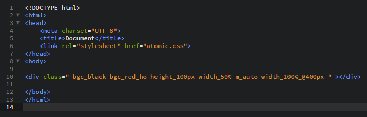
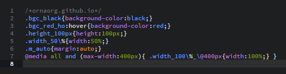

Info for version Orna4Node 1.1.5 and upper
Orna4Node - the tool for easy creation Atomic CSS architecture. Based on NW.JS. Also you can use CLI version.Atomic CSS - is an architecture that says that one CSS class must contain one style (one property).
Looks like:
.w-100px{
width:100px;
}
This cool because your classes are universal. Names of classes are understood. Few classes but many combination. Orna4Node create atomic classes automatically in atomic.css file.
Quick start
-
NW.JS version
- Download Orna4Node-NW.
- Open Orna4Node > package.nw > project > index.html.
- Create HTML elements and write style classes by the Orna signature (property_value, property_value_event, property_value_id, "id or childtagname").
- Then open nw.exe and you will see your work!!!
- Install NODE.JS.
- Download Orna4Node-CLI.
- Put orna4node.js into the root directory with index.html.
- Write index.html with Orna classes.
- Start orna4node.js from CLI(Command line interface). Like: node orna4node.js. But before set file path in CLI. Like: cd C:\myapp.
CLI version
-
Use Orna4Node-CLI with reload node module. For Browser autoreload! It's recommended!
- Install Node.js
- Download Orna4Node-CLI
- Install reload node module from CMD. Write: (npm install -g reload).
- Start "reload". Write in CMD: reload --browser. But do it from right directory. For directory changes use "cd C:\path". Path where the index.html is.
- Create index.html with orna4node classes and put it with Orna4Node file.
- Start orna4node.js from CMD. Write: node orna4node.js. But do it from right directory. For directory changes use "cd C:\path".
- Structure:
- property_value
- property_value_event
- property_value_childtagname (#id, class)
- property_value_mediaqueries
Event, Pseudo-classes:
hover or ho
focus or fo
active or ac
first-child or fc
link or lk
visited or vi
checked or ch
disabled or di
enabled or en
Property:
color or c
width or w
height or h
margin or m (ml,mr,mt,mb)
padding or p (pl,pr,pt,pb)
background or bg
background-color or bgc
background-image or bgi
background-repeat or bgr
background-position or bgp
background-attachment or bga
border or b (bl,br,bt,bb)
border-color or b-c (bl-c,br-c,bt-c,bb-c)
border-style or b-s (bl-s,br-s,bt-s,bb-s)
border-width or b-w (bl-w,br-w,bt-w,bb-w)
text-align or ta
text-decoration or td
font-family or ff
font-size or fs
font-weight or fw
justify-content or jc
align-items or ai
transition-duration or t-dur
transition-delay or t-del
transition-property or t-pro
transition-timing-function or t-fun
display or d
And other like in CSS but with underscore : = _ !!!
Example:
You can use :
class=" color_red margin_10px_hover height_100px width_10% "You can use :
class=" c_red m_10px_ho h_100px w_10% "Using media queries: class=" float_left_@600px ".
Important:
- If classes are almost similar, the long class should be after short.
- Do not confuse Orna4Node and OrnaJS.
They similar, but have differences and used for different things.
class=" width_100px width_100px_div "or
class=" w_100px w_100px_div "width_100px - width 100px to current elementwidth_100px_div - width 100px to child div elementWhat was written in HTML

What will Orna create in CSS
